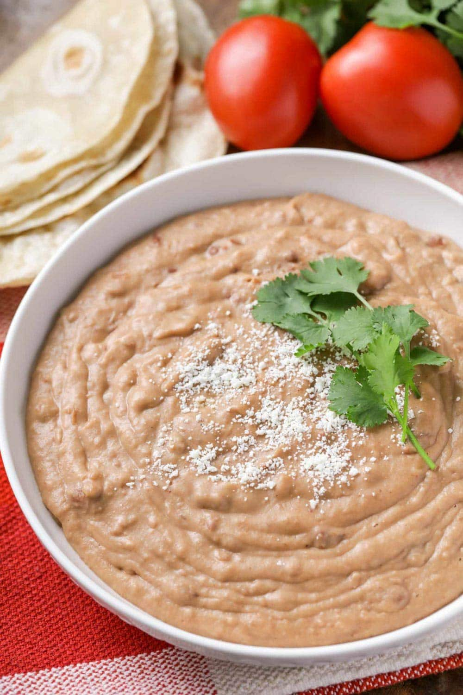

Beans

Ingredients
- 30oz refried beans
- 1/4 cup crisco shortening
- 2/3 cup milk
- 1-2 cups cheese
Instructions
- Combine Beans, shortening and milk in a pot over medium heat. Stir vigorously with fork or wire whisk until silky smooth. Add cheese and let melt before serving. Enjoy with warm tortillas or tortilla chips.
Source